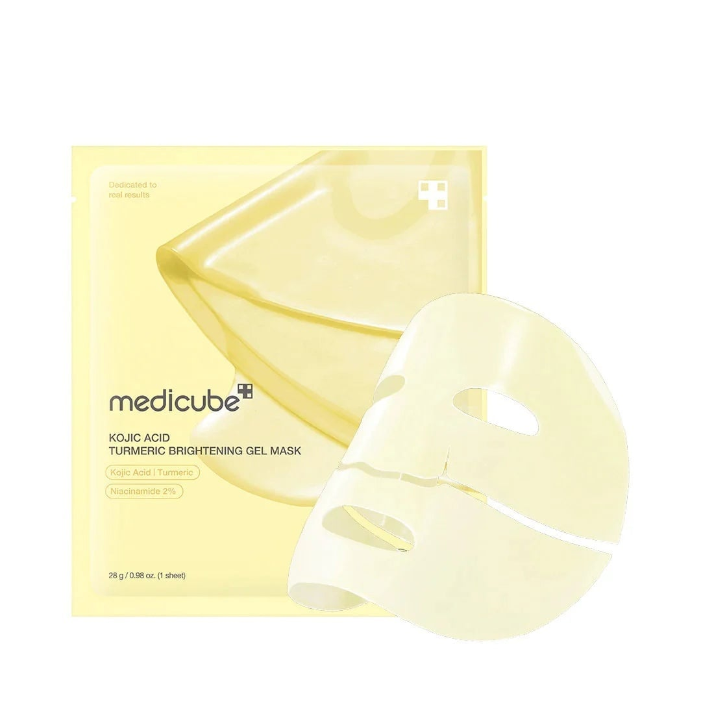
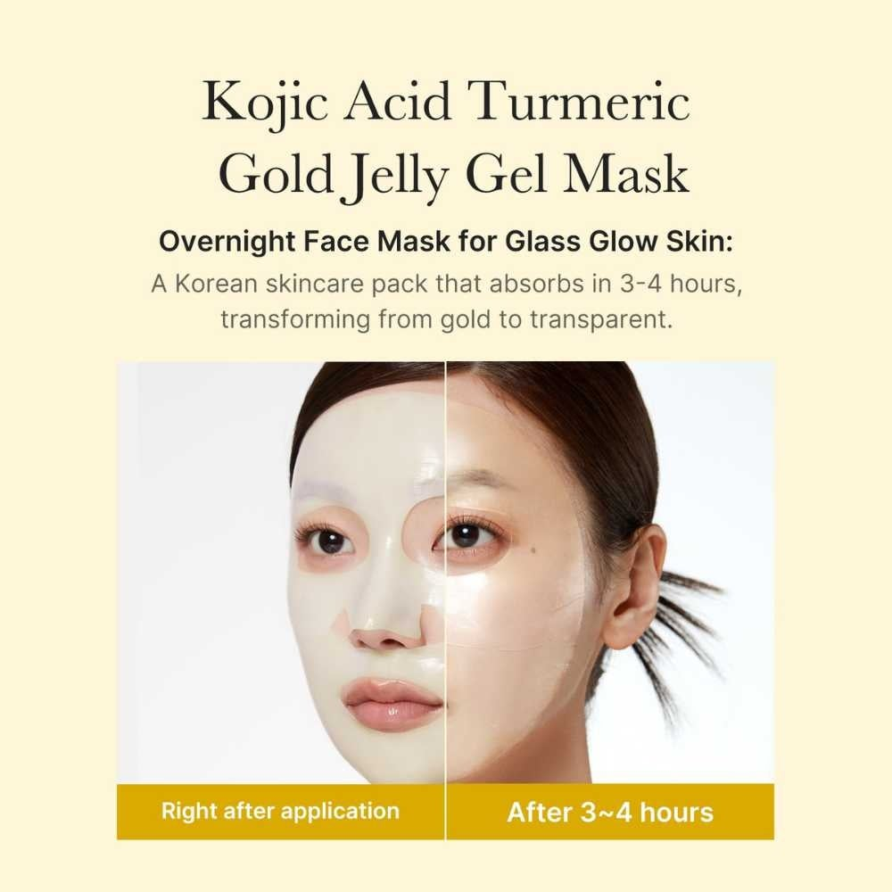
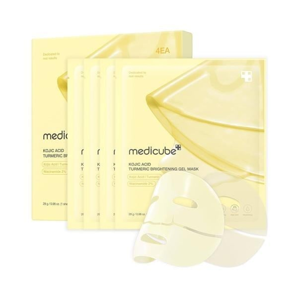
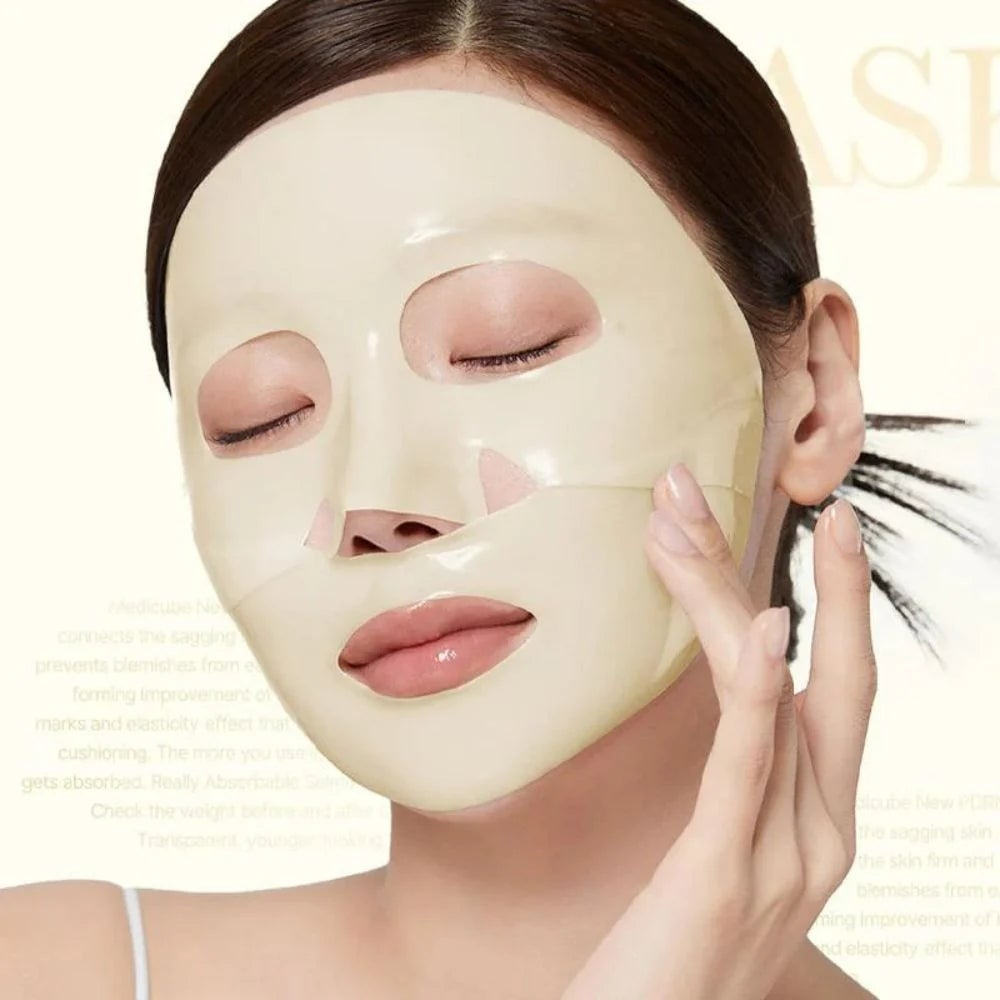
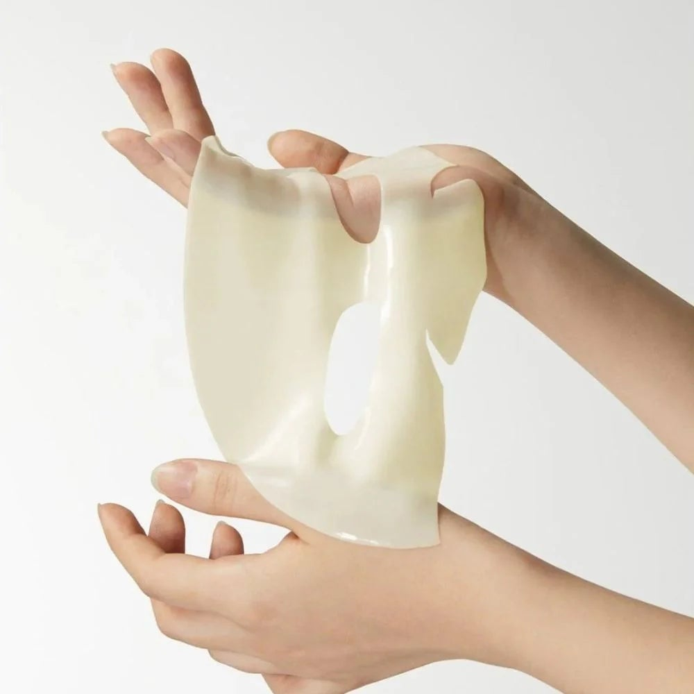
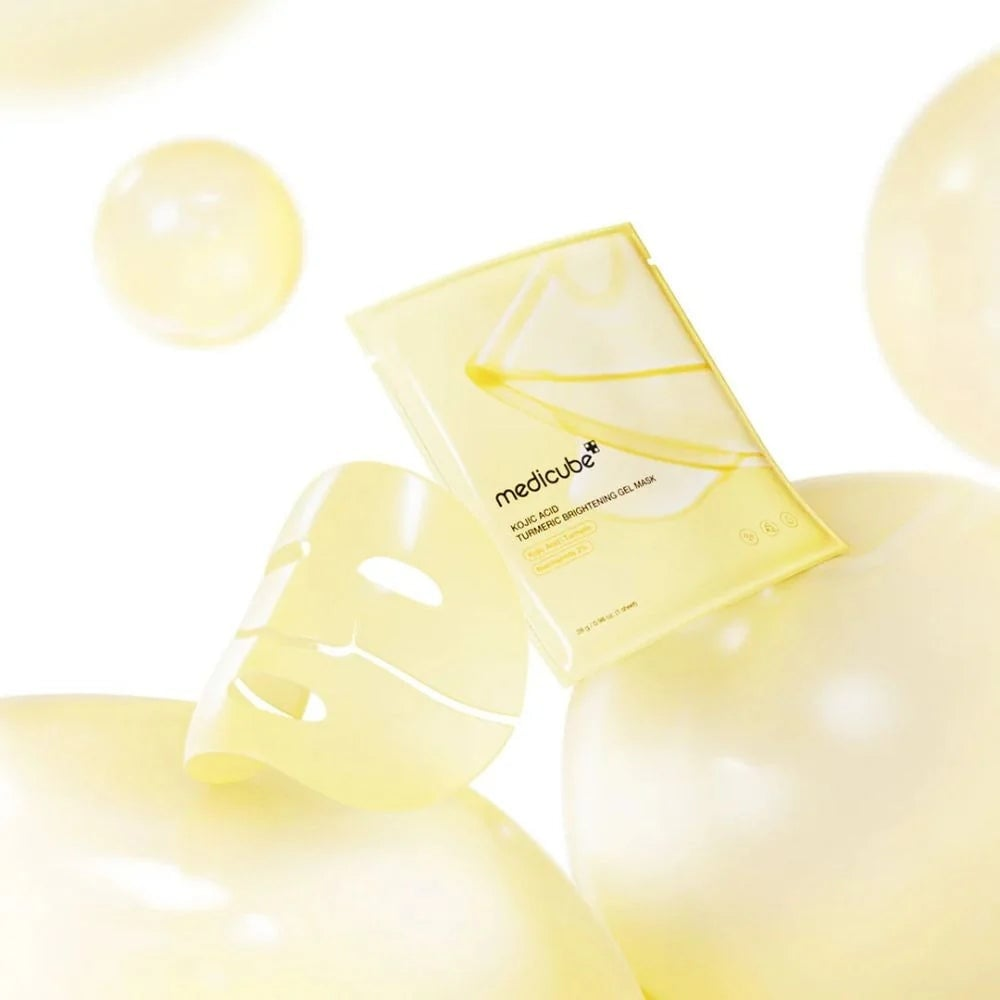

<div> <table style="border-collapse: collapse; width: 99.9809%;" border="1"><colgroup><col style="width: 49.9522%;"><col style="width: 49.9522%;"></colgroup> <tbody> <tr> <td> <div><span style="font-size: 14pt;"><strong>Medicube Masca de fata cu acid Kojic si turmeric</strong></span></div> <div><span style="font-size: 14pt;"><strong>28g</strong></span></div> <div><span style="font-size: 14pt;">Medicube Kojic Acid Turmeric Brightening Gel Mask in format de 28 g. Designul curat, in nuante calde de galben pastel, pune in valoare masca inovatoare de tip hidrogel, imbogatita cu acid kojic, turmeric si 2% niacinamida pentru un efect intens de iluminare a tenului.</span></div> </td> <td></td> </tr> <tr> <td></td> <td><span style="font-size: 14pt;">Actiunea unica a mastii tip &bdquo;Gold Jelly&rdquo;, conceputa ca tratament nocturn coreean, textura sa speciala se absoarbe complet in 3-4 ore, transformandu-se dintr-un gel auriu opac intr-un strat complet transparent, lasand in urma un ten cu un finisaj radiant, de tip &bdquo;glass skin&rdquo;.</span></td> </tr> <tr> <td><span style="font-size: 14pt;">Setul complet Medicube contine 4 masti ambalate individual, ideale pentru o cura completa de redare a luminozitatii. Ambalajul colectiv minimalist si elegant subliniaza calitatea dermato-cosmetica a tratamentului, fiind solutia perfecta pentru uniformizarea nuantei tenului si estomparea eficienta a petelor pigmentare chiar la tine acasa.</span></td> <td></td> </tr> <tr> <td></td> <td><span style="font-size: 14pt;">Datorita structurii flexibile din doua piese, produsul se muleaza perfect pe conturul fetei si adera impecabil, asigurand o infuzie continua de ingrediente active hidratante si iluminatoare pe tot parcursul utilizarii sale confortabile.</span></td> </tr> <tr> <td><span style="font-size: 14pt;">Textura unica, elastica si matasoasa a mastii gel Medicube. Aceasta consistenta premium garanteaza o aplicare racoritoare si o experienta senzoriala extrem de placuta, eliberand treptat nutrientii esentiali in straturile pielii fara a lasa vreo senzatie neplacuta sau lipicioasa.</span></td> <td></td> </tr> <tr> <td></td> <td><span style="font-size: 14pt;">Puritatea formulei, hidratarea intensa si efectul de prospetime pe care acest tratament avansat cu turmeric si acid kojic il ofera pielii tale.</span></td> </tr> </tbody> </table> </div>